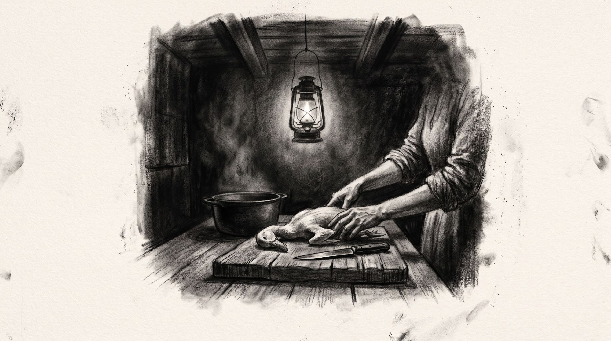

A casa dorme, mas a cozinha ainda ferve. Passa das nove, e os homens vão sair antes do sol rumo a Santa Rita dos Perdões. São doze léguas de chão-batido até lá em cima, na serrinha. Uma lamparina, pendurada no meio do teto. A candeia corta o escuro em dois lotes, um que recebe luz, outro que fica sem nada. O pato sobre a tábua, aquela madeira de veio grosso, sem acabamento, depenado, o amarelo da pele na penumbra. A faca agarrada pelo cabo gasto. Ela começa pelo pescoço, onde a carne desprende mais logo.
Ninguém pergunta a que horas ela vai dormir. Vão comer o virado na sombra da figueira que serve de parada há anos, desentendidos do tempo que o pato levou, na noite anterior, para virar aquilo que vai ser comido com a mão. O plano é formar tropa na madrugada, cada um com seu embornal, seu terço, seus sapatões surrados. Cada um prometendo a si que este ano não vai ter estafa.
A lenha estala ao pegar fogo e solta um cheiro que não se parece com nada. Ela destaca o fígado inteiro, não rasga a vesícula, o gesto é repetido, aprendido com a mãe, que aprendeu com a avó. Ele fica reservado, num prato pequeno, na zona escura da mesa, para nada em especial. O pato cozinha inteiro na panela de ferro com folhas de louro. Depois vai ser refogado com alho amassado com a mesma faca. Ela mede o tempo pela fuligem que sobe devagar e enegrece o teto um pouco mais do que ontem. A carne solta do osso. Ela tira ele do caldo com as mãos que desfiam ainda quente o que resta da carne. O osso posto de lado, limpo, quase branco. Romeiro não pode ficar de estômago vazio, ela pensa baixo. Reclamar do que sempre se fez não é assunto. A farinha vai para a mesma panela, mexida sem parar até engrossar e soltar da colher, os grãos ganhando a cor da gordura. Sustento. O osso da coxa resistiu mais do que o esperado. Ela parou, olhou o corte e tentou de novo. Agora com mais força. O braço ainda doía da quebra de milho.
O virado esfria em panos claros, embrulhado em trouxas escurecidas de gordura, uma para cada homem que vai pagar promessa a uma santa que ela também reza, mas de casa. Prepara uma garrafa de café. Ela vai lavar a faca, guardar na gaveta, apagar a lamparina e se deitar no escuro inteiro.
Nenhum gesto, ali, vai ser chamado de sacrifício.
fim